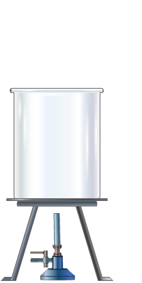
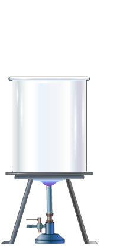

30

Water Cooling - Temperature versus Time
| Time (min) |
Temp °C |
|---|---|
The water in the beaker has been heated to 100 °C
Click the button below to observe the rate of cooling of water. Record the decrease in temperature at a regular interval and plot the graph of Temperature versus Time.
Use the worksheet provided to you, to enter readings of the experiment.
Aim: To measure the temperature of hot water as it cools and to plot a Temperature versus Time plot.
Rate of Cooling
When hot water cools, the rate of decrease in temperature follows Newton's Law of Cooling. According to this law, the rate of change of the temperature of a body is proportional to the difference between its own temperature and the ambient temperature, i.e. the temperature of its surroundings. This means that when the temperature of water is quite high compared to the room temperature, the temperature drops quite rapidly. However, as the water keeps cooling off the difference between its temperature and the room temperature steadily reduces and the rate of decrease of temperature also starts slowing down. This behaviour is demonstrated when you plot the graph of Temperature versus Time for cooling down of hot water from a high temperature to the room temperature.
Apparatus
Beaker filled with Water
Bunsen Burner with tripod and wire gauze
Thermometer
Procedure:
Place the beaker partially filled with water on a tripod stand with a Bunsen burner below it.
Start heating the water with the Bunsen burner.
Allow the temperature of water to increase till 100 deg.
Stop heating by switching off the burner.
Start the timer and measure the temperature for every 1 deg drop in the temperature.
Measure the decrease in temperature for around 30 minutes.
Plot a graph of Temperature versus Time
© 2019, Schoolnet India Limited
Specify a value between 20 and 240 as the time-scale between the program time and the actual experiment time.
Heat the water using the Bunsen burner. Click the burner to switch it on.
You can switch off the burner any time to stop heating or wait until the temperature reaches 100 deg.
On reaching temperature of 100 deg or switching off the burner prior to that, you will be prompted to go to the NEXT stage.
In Stage 2 of the experiment, you can observe the rate of cooling of water over a period of time.
Click RESET to repeat the experiment.